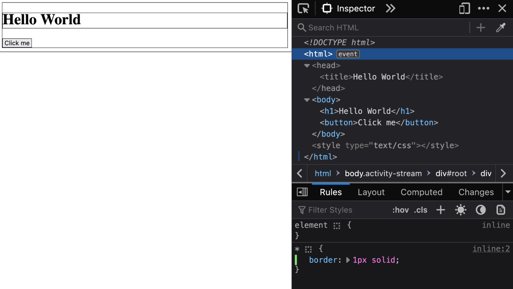
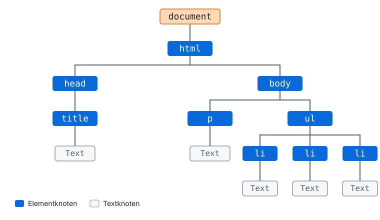
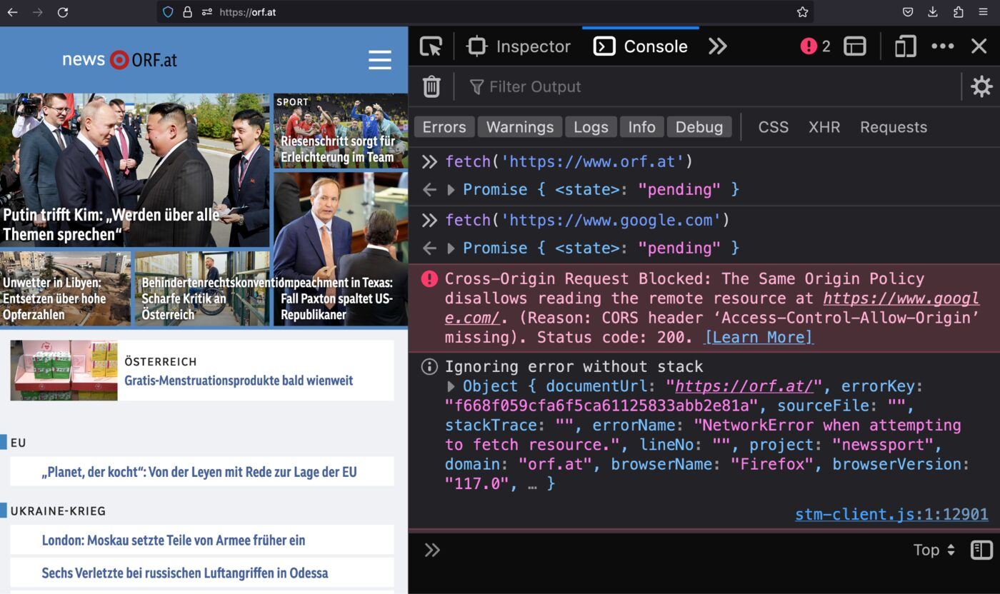
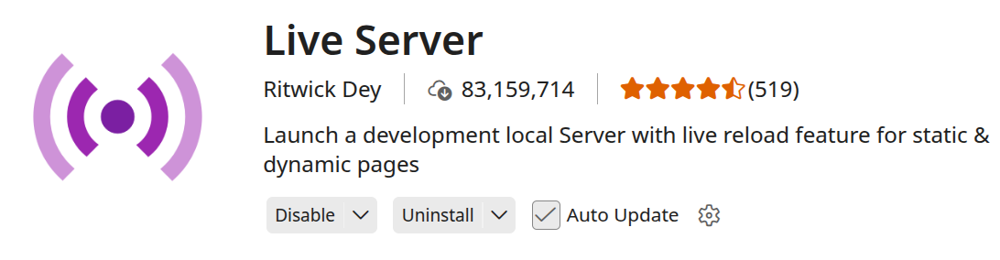
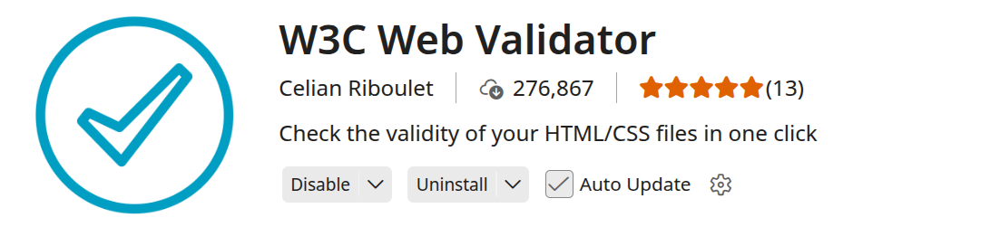

Lektion 1.3 — Teil 1: Web & HTML
HTML5: Spezifikation, DOM & APIs
Lernziele
- Die vier Säulen der HTML5-Spezifikation kennen: Tags, DOM, APIs, Security Policies
- Die wichtigsten HTML5-Tags nach Kategorien einordnen
- Das Grundgerüst eines HTML5-Dokuments (
<!DOCTYPE>,<head>,<body>) schreiben - Verstehen, dass HTML Boxen erzeugt und der Browser daraus einen DOM-Baum baut
- Wissen, was HTML5-APIs sind, und zwei Beispiele (DOM API, Media Capture API) nachvollziehen
- Same-Origin-Policy und Content Security Policy grob erklären
- Das Toolset für den Unterricht einrichten: VS Code, Live Server, W3C Validator
1 — HTML5-Spezifikation
Die HTML5-Spezifikation der WHATWG ist ein „Living Standard“. Sie wird ständig aktualisiert, um aktuelle Technologien und Best Practices widerzuspiegeln – das fördert eine moderne und effiziente Webentwicklung. Die Spezifikation umfasst vier große Bereiche, die wir in dieser Lektion der Reihe nach durchgehen:
- HTML-Tags
- DOM (Document Object Model)
- APIs (Schnittstellen)
- Security Policies
https://www.w3.org/TR/2011/WD-html5-20110405/
https://html.spec.whatwg.org/multipage/
2 — HTML5-Tags
HTML-Tags sind die Bausteine von HTML-Dokumenten. Sie sagen dem Browser, was ein Inhalt ist und wie er ihn anzeigen soll. Die Tags lassen sich in Kategorien einteilen:
| Kategorie | Tags |
|---|---|
| Dokument-Metadaten | <html>, <head>, <body>, <title>, <link>, <meta>, <style> |
| Struktur und Sektionierung | <header>, <footer>, <main>, <nav>, <section>, <article>, <aside> |
| Gruppierungs-Elemente | <div>, <p>, <hr>, <pre>, <blockquote>, <ol>, <ul>, <li> |
| Text-Semantik-Elemente | <a>, <em>, <strong>, <small>, <cite>, <abbr>, <time>, <code>, <address> |
| Formulare und Formelemente | <form>, <input>, <textarea>, <button>, <select>, <option>, <label>, <fieldset>, <legend> |
| Eingebettete Inhalte | <img>, <video>, <audio>, <iframe>, <embed>, <object> |
| Tabellen-Elemente | <table>, <thead>, <tbody>, <tr>, <td>, <th> |
| Scripting-Elemente | <script>, <noscript>, <canvas> |
Niemand kennt alle Tags auswendig. Wichtig ist, die Kategorien zu kennen – Details schlägst du in der MDN-Referenz nach.
3 — HTML5 „Hello World“
Jedes HTML5-Dokument hat dasselbe Grundgerüst:
<!DOCTYPE html>
<html>
<head>
<title>Hello World</title>
</head>
<body>
<h1>Hello World</h1>
<button>Click me</button>
</body>
</html>| Teil | Bedeutung |
|---|---|
<!DOCTYPE html> | Definiert den Dokumenttyp (in diesem Fall HTML5). |
<head> … </head> | Hier stehen Informationen über die Webseite (Titel, Zeichensatz, Stylesheets …). Nicht sichtbar. |
<body> … </body> | Hier steht der sichtbare Teil der Webseite. |
Hello World
4 — HTML erzeugt Boxen („Kastln“)
Eine der wichtigsten Einsichten für später (CSS!): Jedes HTML-Element erzeugt eine rechteckige Box. Normalerweise sind die Ränder unsichtbar. Mit einer kleinen CSS-Regel in den Entwicklertools kann man sie sichtbar machen:
* {
border: 1px solid;
}Diese Regel gibt allen HTML-Elementen eine sichtbare Umrandung:

Hello World
5 — HTML5 DOM
Das DOM (Document Object Model) ist eine Schnittstelle, die Webseiten als Baumstruktur aus Objekten darstellt. Jedes Objekt (jeder „Knoten“) steht für einen Teil der Webseite.
Über JavaScript können diese Objekte gelesen und verändert werden.

Der Browser liest das HTML von oben nach unten und baut daraus diesen Baum. Verschachtelte
Elemente werden zu Kindknoten: <li> ist ein Kind von <ul>, das wiederum ein
Kind von <body> ist.
Exkurs: DOM API
Das folgende Beispiel fügt dem Button einen click-Handler hinzu:
<!DOCTYPE html>
<html>
<head>
<title>Hello World</title>
</head>
<body>
<h1>Hello World</h1>
<button>Click me</button>
<script>
// Document Object Model (DOM) API
const button = document.querySelector('button');
button.addEventListener('click', function() {
console.log('Button was clicked');
});
</script>
</body>
</html>document.querySelector('button')sucht im DOM-Baum das erste<button>-Element.addEventListener('click', …)registriert eine Funktion, die bei jedem Klick ausgeführt wird.console.log(…)schreibt in die Konsole der Entwicklertools (F12 → Console).
Du musst diesen Code jetzt noch nicht selbst schreiben können. Er zeigt nur, warum das DOM wichtig ist: Es ist die Brücke zwischen HTML und JavaScript.
6 — HTML5 APIs
HTML5 APIs bieten Entwickler:innen Schnittstellen, mit denen sie fortschrittliche Funktionen und interaktive Inhalte in Webanwendungen integrieren können.
Beispiele sind APIs für Drag-and-Drop, Offline-Anwendungen, Lokalisierung und die Interaktion mit Multimedia-Elementen wie Video und Audio. Übersicht: developer.mozilla.org/en-US/docs/Web/API
- Document Object Model (DOM) API
- Geolocation API
- Web Storage API
- Fetch API
- Canvas API
- Web Audio API
- WebRTC API
- Media Capture and Streams API
- WebSockets API
- Web Animations API
- File API
- Notification API
- Payment Request API
- IndexedDB API
- History API
- Drag and Drop API
Exkurs: Media Capture API
Dieses Beispiel öffnet die Kamera und streamt das Bild in das <video>-Element:
<!DOCTYPE html>
<html>
<head>
<title>Hello Camera</title>
</head>
<body>
<video autoplay playsinline></video>
<script>
const video = document.querySelector('video');
// Media Capture and Streams API
navigator.mediaDevices.getUserMedia({ video: true })
.then((stream) => {
video.srcObject = stream;
});
</script>
</body>
</html>Aus Sicherheitsgründen erlauben Browser den Kamerazugriff nur auf sicheren Seiten
(https://) oder lokal (localhost, 127.0.0.1). Außerdem
fragt der Browser immer um Erlaubnis.
7 — HTML5 Security Policies
Sicherheitsrichtlinien (Security Policies) erhöhen die Sicherheit beim Surfen. Sie schränken schädliche Aktionen ein, die über Webseiten ausgeführt werden könnten, indem sie Regeln für die Ausführung von Scripts und den Zugriff auf Ressourcen festlegen.
| Policy | Beschreibung |
|---|---|
| Same-Origin-Policy (SOP) | Der Browser verhindert, dass eine Webseite auf Daten zugreift, die von einer anderen Webseite (einem anderen „Origin“) stammen. MDN: Same-origin policy |
| Content Security Policy (CSP) | Eine zusätzliche Sicherheitsebene, mit der Webentwickler:innen festlegen, aus welchen Quellen eine Seite Scripts, Bilder, Styles usw. laden darf. MDN: Content Security Policy |
Exkurs: Same-Origin-Policy
Die Fetch API führt in JavaScript einen HTTP-Request aus. Ob der Browser die Antwort an das Script weitergibt, hängt vom Origin ab:
| Seite | Request an | Art | Ergebnis |
|---|---|---|---|
www.orf.at | www.orf.at | Same Origin | Erlaubt |
www.orf.at | www.google.com | Cross Origin | Der Browser blockiert die Antwort von Google |

Der Origin ist die Kombination aus Scheme + Host + Port.
https://www.orf.at und https://api.orf.at sind bereits
unterschiedliche Origins.
8 — Toolset für den Unterricht
Für den Kurs verwenden wir folgende Werkzeuge:


Rechtsklick auf index.html → Open with Live Server, oder
unten rechts in der Statusleiste auf Go Live klicken. Die Seite öffnet sich
unter http://127.0.0.1:5500/.
Projektschritt
Das Grundgerüst der Demoseite
Erstelle demoseite/index.html mit dem HTML5-Grundgerüst. Zusätzlich zum
„Hello World“ geben wir Sprache (lang="de"), Zeichensatz und Viewport an
– diese drei Angaben gehören in jedes echte Projekt. Das HTML5-Logo legst du in
img/ ab.
<!DOCTYPE html>
<html lang="de">
<head>
<meta charset="UTF-8">
<meta name="viewport" content="width=device-width, initial-scale=1.0">
<title>Demoseite: Web- and Mobile Computing</title>
</head>
<body>
<h1>Demoseite: Webdesign Grundkurs</h1>
<h2>HTML Grundlagen</h2>
<p>
HTML (HyperText Markup Language) entstand Anfang der 1990er-Jahre am CERN.
Tim Berners-Lee definierte eine einfache Auszeichnungssprache, um Dokumente
im neu entstehenden World Wide Web miteinander zu verlinken.
</p>
<img src="img/html5_logo.png" alt="HTML5 Logo">
<h2>Themen dieses Kurses</h2>
<ul>
<li>HTML</li>
<li>CSS</li>
<li>JavaScript</li>
</ul>
</body>
</html>Starte die Seite mit Live Server und finde im Tab Elements der Entwicklertools den DOM-Baum.
Häufige Fehler
<h1> oder Text werden in den <head> geschrieben.
Im <head> stehen nur Metadaten (Titel, Zeichensatz, Stylesheets). Alles Sichtbare gehört in den <body>.
Der Browser kennt den Zeichensatz der Datei nicht und rät falsch.
<meta charset="UTF-8"> als erstes Element in den <head> schreiben und die Datei als UTF-8 speichern.
Die Adresse beginnt mit file://. Einige APIs (z. B. Fetch, Kamera) funktionieren dann nicht, und die Seite lädt nicht automatisch neu.
Die Seite immer über Live Server (http://127.0.0.1:5500/) öffnen.
Aufgaben
Ordne folgende Tags ihrer Kategorie zu: <nav>, <time>, <canvas>, <legend>, <blockquote>, <iframe>, <meta>, <th>.
Zeichne den DOM-Baum deiner demoseite/index.html auf Papier (wie in der Abbildung oben) und vergleiche ihn mit dem Tab Elements in den Entwicklertools.
Füge in den Entwicklertools unter Styles die Regel * { border: 1px solid red; } hinzu. Welche Elemente sind so breit wie die Seite, welche nur so breit wie ihr Inhalt?
Probiere das Media-Capture-Beispiel über Live Server aus. Was passiert, wenn du den Kamerazugriff verweigerst? Schau in die Konsole.